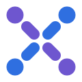
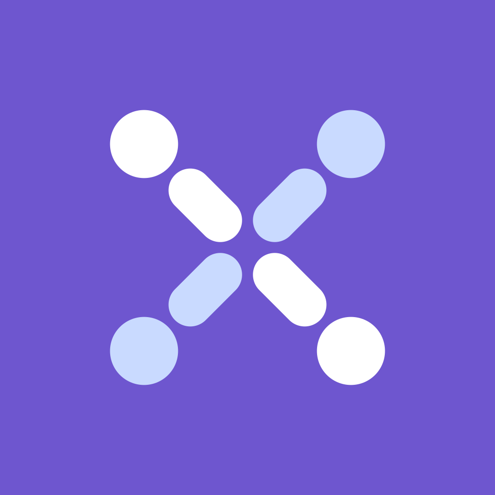
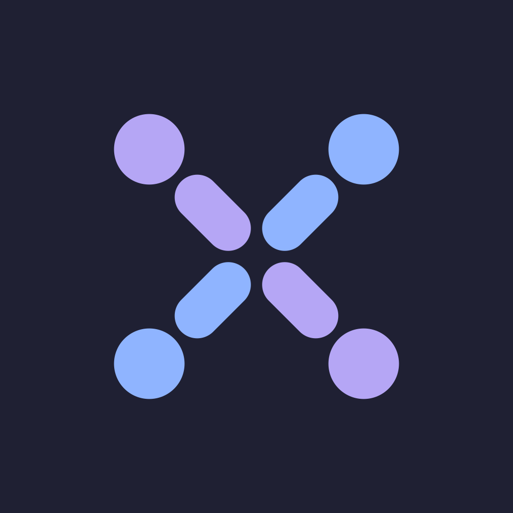

GrupX logosu
Dört üye ortada buluşur; başları ve gövdeleri birlikte bir X oluşturur. Hem "GrupX"in X'i, hem bir araya gelen topluluk.

GrupX
GrupX
GrupX


Mor #6E56CF
Mavi #2F6FE0
Gece #1F2033
Açık mavi #C9DAFF
Yumuşak mor #B5A6F5
Yumuşak mavi #8FB4FF